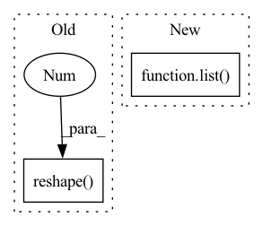

Pattern ID :5265
Before Change
user_ids = np.expand_dims(user_ids, 1).repeat(n_candidates, axis=1).reshape(-1)
times = np.expand_dims(times, 1).repeat(n_candidates, axis=1).reshape(-1)
history_items = np.expand_dims(history_items, 1).repeat(n_candidates, axis=1).reshape(-1)
history_times = np.expand_dims(history_times, 1).repeat(n_candidates, axis=1).reshape(-1 )
// Find information related to the target item:
// - category id
// - time intervals w.r.t. recent relational interactions (-1 if not existing)After Change
// - category id
// - time intervals w.r.t. recent relational interactions (-1 if not existing)
category_ids = list()
relational_intervals = list()
for i, candidate_lst in enumerate(item_ids):
intervals_lst = list()
for r_idx in range(0, self.relation_num):
intervals = np.ones_like(candidate_lst) * -1.In pattern: SUPERPATTERN
Frequency: 6
Non-data size: 2
Instances Fragment ID: 18633816
Project Name: thuwangcy/rechorus
Commit Name: 25fac75a3939959fb807d2413754135b9b650fec
Time: 2020-05-19
Author: wangcy18@mails.tsinghua.edu.cn
File Name: src/models/SLRC.py
M Class Name: SLRC
N Class Name: SLRC
M Method Name: get_feed_dict(6)
N Method Name: get_feed_dict(6)
M Parent Class: BaseModel
N Parent Class: BaseModel
M File Name: src/models/SLRC.py
N File Name: src/models/SLRC.py
M Start Line: 77
M End Line: 104
N Start Line: 77
N End Line: 112
Before Change
def bucket(buckets, v):
b, t, d = v.shape
return v.reshape( b, buckets, -1 , d)
def unbucket(v):
b, *_, e = v.shape
return v.reshape(b, -1, e)After Change
return t[l], t[r]
def bucket(buckets, t, dim=1):
shape = list( t.shape)
shape[dim:dim+1] = [buckets, -1]
return t.reshape(*shape)
def unbucket(t, dim=1): Fragment ID: 18633804
Project Name: lucidrains/sinkhorn-transformer
Commit Name: d50bc5774a1be7b2ed68d99b42384fe38a844c3d
Time: 2020-04-12
Author: lucidrains@gmail.com
File Name: sinkhorn_transformer/sinkhorn_transformer.py
M Class Name: AnonimousClass
N Class Name: AnonimousClass
M Method Name: bucket(3)
N Method Name: bucket(2)
M Parent Class:
N Parent Class:
M File Name: sinkhorn_transformer/sinkhorn_transformer.py
N File Name: sinkhorn_transformer/sinkhorn_transformer.py
M Start Line: 49
M End Line: 50
N Start Line: 54
N End Line: 57
Before Change
def search(self, query, limit):
// Run the query
ids, distances = self.model.knn_query(query.reshape(1 , -1) , k=limit)
// Convert distances to similarity scores
scores = [1 - d for d in distances[0]]After Change
// Convert distances to similarity scores
scores = [1 - d for d in distance]
results.append(list( zip(ids[x], scores)) )
return results
Fragment ID: 18633812
Project Name: neuml/txtai
Commit Name: e84d7c003b02c0ec6a451130a66a3f5652f38e48
Time: 2021-01-08
Author: 561939+davidmezzetti@users.noreply.github.com
File Name: src/python/txtai/ann.py
M Class Name: HNSW
N Class Name: HNSW
M Method Name: search(3)
N Method Name: search(3)
M Parent Class: ANN
N Parent Class: ANN
M File Name: src/python/txtai/ann.py
N File Name: src/python/txtai/ann.py
M Start Line: 190
M End Line: 196
N Start Line: 202
N End Line: 212
Before Change
for idx in range(source_shape[0] * source_shape[1]):
basis_vec = np.zeros(source_shape)
basis_vec[np.unravel_index(idx, source_shape)] = 1.0
vec = tf.image.resize(np.expand_dims(basis_vec, -1), target_shape, method=method).numpy().reshape(-1 )
mat.append(vec)
resize_mat_pinv = np.linalg.pinv(np.stack(mat))
// v_resample_kernel = jax.vmap(jax.vmap(lambda kernel: (resize_mat_pinv @ kernel.reshape(-1)).reshape(new_hw), 2, 2), 3, 3)After Change
// print("source_layer:", {kk: vv.shape for kk, vv in source_layer.items()})
if isinstance(source_layer, dict):
source_kernel, source_bias = list( source_layer.values()) // weights
else:
source_kernel, source_bias = source_layer.get_weights() // layer
Fragment ID: 18633814
Project Name: leondgarse/keras_cv_attention_models
Commit Name: 1aa29dc686f862bc1ff66a11700fa8ef16bd2b8a
Time: 2023-02-03
Author: leondgarse@gmail.com
File Name: keras_cv_attention_models/beit/beit.py
M Class Name: PatchConv2DWithResampleWeights
N Class Name: PatchConv2DWithResampleWeights
M Method Name: load_resized_weights(3)
N Method Name: load_resized_weights(3)
M Parent Class: layers.Conv2D
N Parent Class: keras.layers.Conv2D
M File Name: keras_cv_attention_models/beit/beit.py
N File Name: keras_cv_attention_models/beit/beit.py
M Start Line: 248
M End Line: 276
N Start Line: 243
N End Line: 275
Before Change
def unbucket(v):
b, *_, e = v.shape
return v.reshape( b, -1 , e)
def sample_gumbel(shape, device, dtype, eps=1e-6):
u = torch.empty(shape, device=device, dtype=dtype).uniform_(0, 1)
return -log(-log(u, eps), eps)After Change
return t.reshape(*shape)
def unbucket(t, dim=1):
shape = list( t.shape)
shape[dim:dim+2] = [-1]
return t.reshape(*shape)
def sample_gumbel(shape, device, dtype, eps=1e-6): Fragment ID: 18633815
Project Name: lucidrains/sinkhorn-transformer
Commit Name: d50bc5774a1be7b2ed68d99b42384fe38a844c3d
Time: 2020-04-12
Author: lucidrains@gmail.com
File Name: sinkhorn_transformer/sinkhorn_transformer.py
M Class Name: AnonimousClass
N Class Name: AnonimousClass
M Method Name: unbucket(2)
N Method Name: unbucket(1)
M Parent Class:
N Parent Class:
M File Name: sinkhorn_transformer/sinkhorn_transformer.py
N File Name: sinkhorn_transformer/sinkhorn_transformer.py
M Start Line: 52
M End Line: 54
N Start Line: 59
N End Line: 62
Before Change
def search(self, query, limit):
// Run the query
self.model.nprobe = 6
scores, ids = self.model.search(query.reshape(1 , -1) , limit)
// Map results to [(id, score)]
return list(zip(ids[0].tolist(), (scores[0]).tolist()))After Change
// Map results to [(id, score)]
results = []
for x, score in enumerate(scores):
results.append(list( zip(ids[x].tolist(), score.tolist())) )
return results
Fragment ID: 18633808
Project Name: neuml/txtai
Commit Name: e84d7c003b02c0ec6a451130a66a3f5652f38e48
Time: 2021-01-08
Author: 561939+davidmezzetti@users.noreply.github.com
File Name: src/python/txtai/ann.py
M Class Name: Faiss
N Class Name: Faiss
M Method Name: search(3)
N Method Name: search(3)
M Parent Class: ANN
N Parent Class: ANN
M File Name: src/python/txtai/ann.py
N File Name: src/python/txtai/ann.py
M Start Line: 158
M End Line: 161
N Start Line: 166
N End Line: 173